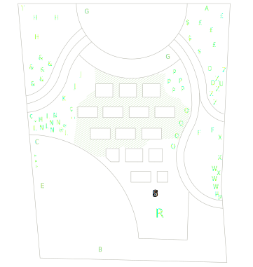

Planten in september 2023
juni 2019 | maart 2020 | mei 2020 | juli 2020 | mei 2021 | juni 2021 | september 2023 | mei 2025

De redenering was: laat het eens een meer dan een jaar zijn ding doen, en zie dan wat er gebeurt.
Het was wat ik gevreesd had: de kruiptijm heeft de nattigheid inderdaad niet overleefd. 't Is te zeggen, er staat hier en daar nog wel een takje tijm, maar 't is niet de moeite waard om apart te vermelden.
Gezien de desastreuze tomatensituatie in 2021-2022 heb ik dat ook maar laten varen: zonder onderdak en met opnieuw de nattigheid en de beesten, is er geen beginnen aan. De tomaten die niet opgevreten waren, waren rot van schimmel, en tomaten die niet aan het rotten waren, werden opgevreten voor ze rijp waren.
Twee van de bomen die zichzelf hadden gezaaid hadden hebben twee jaar overleefd en staan nu dus al twee jaar in hun eigen potten. een grauwe wilg en een boswilg. Ik hoop dat ze het uithouden, zo in een pot. Mischien moet ik ooit wel een grotere pot kopen, maar voorlopig doen ze het relatief goed. Beter dan de Japans esdoorn, die in de loop van vorig jaar wéér een stuk verloren is aan een ondergrondse schimmel.
Nu de kruiptijm helemaal opgeborgen is als optie, is het bodembedekkingsfront een combinatie van wat er onkruidgewijs goesting heeft om te groeien: klaver, klaverzuring, muurleeuwenbek, verschillende soorten mossen en levermossen. Ik ben daar niet kwaad op. De stekelnootjes trekken trouwens ook op, en moeten in de hand gehouden worden of ze overgroeien alles.
| Naam | in 't Latijns | # | |
|---|---|---|---|
| A | klimroos | Rosa "guirlande d'amour’ | 1 |
| B | waterwilg | Salix caprea | 1 |
| C | esdoorn | Acer pseudoplatanus | 1 |
| D | mannetjesvaren | Dryopteris felix-mas | 2 |
| E | wilg | Salix sp.? | 1 |
| F | Japanse zegge | Carex morrowii ‘goldband’ | 2 |
| G | vlinderstruik | Buddleja davidii | 2 |
| H | prachtriet | Miscanthus sinensis ‘Ferner oster‘ | 3 |
| J | lavendel | Lavendula angustifilia ‘Alba’ | 2 |
| K | salie | Salvia | 2 |
| L | rozemarijn | Rosemarinus | 3 |
| M | tijm | Thymus | 2 |
| N | oregano | Oregano vulgare | 2 |
| P | schoenlappersplant | Bergenia cordifolia | 5 |
| Q | bloedooievaarsbek | Geranium sanguineum | 15 |
| R | Japanse esdoorn | Acer palmatum dissectum | 1 |
| S | stekelnootje | Acaena buchananii | 30 |
| T | witte regen | Wisteria floribunda ‘Alba’ | 1 |
| U | vuurdoorn | Pyracantha coccinea ‘Orange glow’ | 1 |
| W | geitenbaard | Aruncus dioicus | 3 |
| X | clematis | Clematis armandii ‘Apple blossom’ | 3 |
| Z | duizendknoop | Persicaria affinis ‘Darjeeling Red’ | 5 |
| & | vlambloem | Phlox subulata ‘Purple Beauty’ | 5 |
| @ | bieslook | Allium schoenoprasum | 3 |
| £ | kattenkruid | Nepeta faassenii ‘Six Hills Giant’ | 2 |
| $ | kattenkruid | Nepeta faassenii ‘Snowflake’ | 3 |
| * | marjolein | Origanum majorana | 1 |
| + | muurleeuwenbek | Cymbalaria muralis | ?? |
| Þ | munt | Mentha sp. | 4 |
Die "??"" bij muurleeuwenbek: da's omdat ik geen flauw idee heb hoeveel planten er van zijn, wegens dat die dingen uitzaaien voor vermoord.